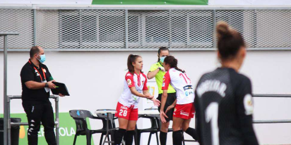
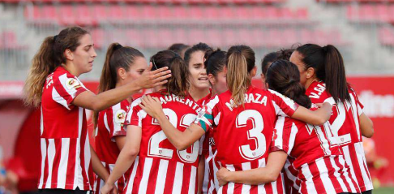

ULTIMAS NOTICIAS PRIMERA IBERDROLA
ALBA ZAFRA Y EL SUEÑO DE DEBUTAR CON 16 AÑOS EN PRIMERA
En la jornada 1 de esta temporada 2019-20, Alba Zafra ha cumplido su sueño de debutar en Primera Femenina con tan solo 16 años.
ASÍ FUE LA JORNADA 2: BARÇA Y ATHLETIC LIDERAN LA TABLA
Barcelona y Athletic son los únicos equipos que han ganado sus dos primeros partidos de la Primera Femenina de fútbol. Lideran la clasificación con seis puntos.